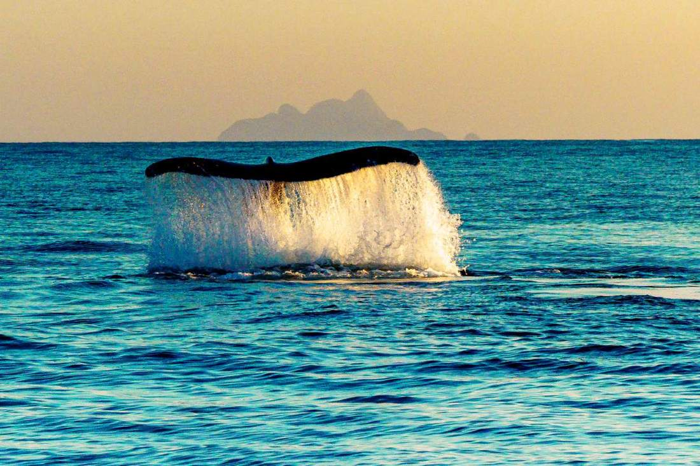
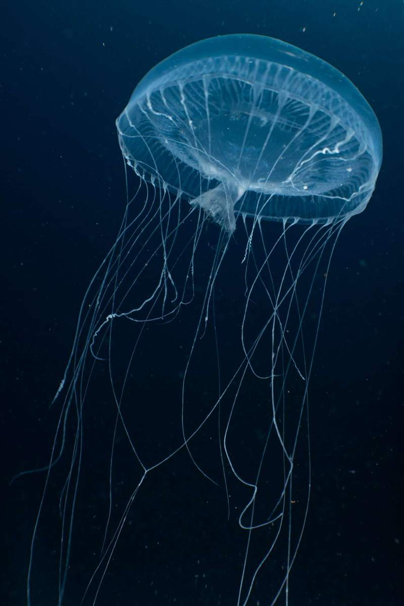
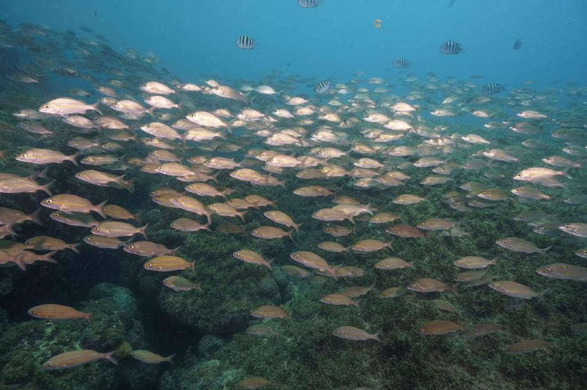
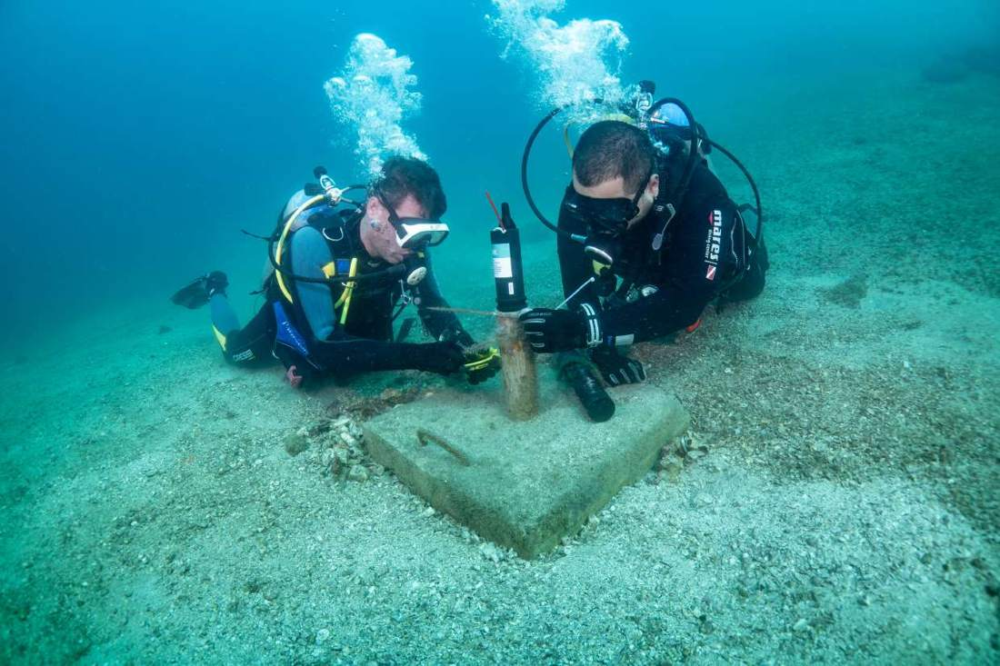
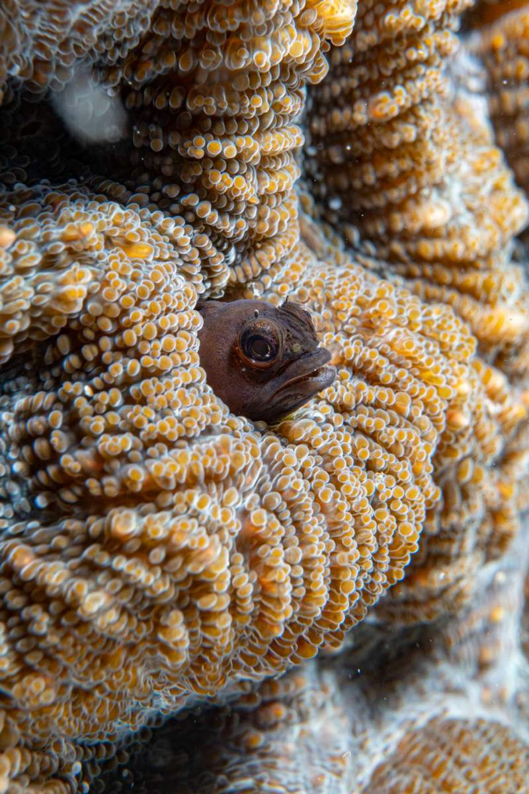

O Projeto Mar de Alcatrazes foi um programa de monitoramento e pesquisa científica desenvolvido no Refúgio de Vida Silvestre (REVIS) do Arquipélago de Alcatrazes, uma das maiores áreas marinhas protegidas do Sudeste do Brasil.
Fruto da cooperação entre UNIFESP, Petrobras e FAP-UNIFESP, em parceria com o NGI-ICMBio Alcatrazes, o CEBIMar-USP e a UNESP, reuniu ciência, tecnologia e formação de estudantes para gerar o conhecimento que embasa a gestão das Unidades de Conservação.

Alcatrazes, o “Lugar de Aves”
A cerca de 35 km de São Sebastião, o arquipélago reúne cinco ilhas (Alcatrazes, Sapata, Paredão, Farol e Oratório), quatro lajes e alguns parcéis. A maior ilha tem cerca de 1,4 km², o equivalente a 200 campos de futebol, e o Pico da Boa Vista chega a 316 metros.
Há cerca de 11 mil anos, no fim da última Era do Gelo, o conjunto se separou do continente. O isolamento fez a vida seguir caminho próprio: hoje há espécies que não existem em nenhum outro lugar, como a perereca-de-alcatrazes, a jararaca-de-alcatrazes e o antúrio-de-alcatrazes. Povos pré-coloniais o chamavam de Uiraretama, “Lugar de Aves”, e ali fica um dos maiores ninhais de fragatas e atobás do Atlântico Sul.




Marinheiros que conhecem bem o lugar guiaram pesquisadores e estudantes por quatro frentes de trabalho, do fundo do mar à análise de dados de satélite.
Fatores abióticos
Condições físico-químicas, correntes e temperatura da água, para entender como o clima molda o ecossistema.
Peixes
Comportamento de budiões, frades, garoupas e raias, e das agregações de tubarões ameaçados de extinção.
Comunidades bentônicas
Os organismos do fundo, que servem de abrigo, berçário e zona de alimentação, estudados com métodos não destrutivos.
Espécies exóticas
Controle de bioinvasores como o coral-sol e o mexilhão-verde. A lista de espécies não nativas subiu de 11 para 23.




Como se estuda o que ninguém vê
BRUV
Filmagens remotas subaquáticas com isca: duas câmeras e uma caixa com sardinhas ficam pelo menos uma hora no fundo, registrando tudo o que passa.
Telemetria acústica
Receptores e microchips revelam padrões de comportamento de garoupas, raias e outras espécies.
Censos visuais
Mergulhadores contam e catalogam os peixes ao longo de cinco anos de expedições.
Satélite e sensores
Sensores térmicos, radiômetros e modelos matemáticos mostram como a vida marinha reage às anomalias térmicas.



Da mira dos canhões à proteção integral
“E mandei colocar o barco na água para ir até a ilha caçar fragatas e atobás, que eram tantos que cobriam a ilha.”Pero Lopes, 1531
A reportagem-síntese
O filme
O fotógrafo e cinegrafista Leo Francini acompanhou o projeto e transformou cinco anos de pesquisa em um documentário sobre o Mar de Alcatrazes.
O filme é pesado e pode demorar para carregar no celular.
O livro
“Mar de Alcatrazes: monitoramento de invertebrados, peixes e fatores abióticos no ambiente marinho do Arquipélago dos Alcatrazes, litoral norte do Estado de São Paulo” reúne os resultados e os bastidores de cinco anos de pesquisa.
Com linguagem acessível, depoimentos de campo e rica documentação fotográfica, aborda aves e mamíferos marinhos, peixes, vida bentônica e o controle de espécies exóticas. Leitura para estudantes, educadores e apoiadores da conservação dos oceanos.
Organização: Jéssica P. Boelter, Ana Clara S. Athayde e Fábio S. Motta.
O livro está bem aqui, basta deslizar dentro do quadro para começar a ler!
O livro está bem aqui, basta deslizar dentro do quadro para começar a ler!
